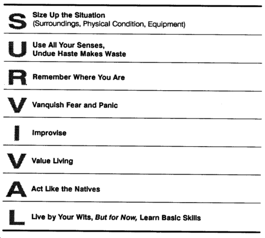

Featured Member Video
How To Use Various Fire StartersMore Videos by crashdive123
View larger or ask the author a question.
View all wilderness survival videos
Recent Forum Posts 
| Thread Title | Replies |
| Lost in the jungle at night | 7 |
| Chinese Fishing Lures on Ebay | 1 |
| So, how ‘bout that carona virus? | 310 |
| New washing machine!? | 6 |
| Hi | 2 |
| What are you cooking today and how? | 2283 |
| I'm Pretty Proud... | 28 |
| Pet hair | 31 |
| Hey everyone | 1 |
| Which skateboard should be the best... | 18 |
Come Join the Discussion Today!
Our site has been mentioned in:
U.S. News and World Report
Best of the Web - Site of the Week 8/6/01
Discovery Channel Canada
One Week in the Wilderness
USA Today
Hot Sites 08/08/2005
INTRODUCTION

This manual is based entirely on the keyword SURVIVAL. The letters in this word can help guide you in your actions in any survival situation. Whenever faced with a survival situation, remember the word SURVIVAL.
SURVIVAL ACTIONS
The following paragraphs expand on the meaning of each letter of the word survival. Study and remember what each letter signifies because you may some day have to make it work for you.
S -Size Up the Situation
If you are in a combat situation, find a place where you can conceal yourself from the enemy. Remember, security takes priority. Use your senses of hearing, smell, and sight to get a feel for the battlefield. What is the enemy doing? Advancing? Holding in place? Retreating? You will have to consider what is developing on the battlefield when you make your survival plan.
Size Up Your Surroundings
Determine the pattern of the area. Get a feel for what is going on around you. Every environment, whether forest, jungle, or desert, has a rhythm or pattern. This rhythm or pattern includes animal and bird noises and movements and insect sounds. It may also include enemy traffic and civilian movements.
Size Up Your Physical Condition
The pressure of the battle you were in or the trauma of being in a survival situation may have caused you to overlook wounds you received. Check your wounds and give yourself first aid. Take care to prevent further bodily harm. For instance, in any climate, drink plenty of water to prevent dehydration. If you are in a cold or wet climate, put on additional clothing to prevent hypothermia.
Size Up Your Equipment
Perhaps in the heat of battle, you lost or damaged some of your equipment. Check to see what equipment you have and what condition it is in.
Now that you have sized up your situation, surroundings, physical condition, and equipment, you are ready to make your survival plan. In doing so, keep in mind your basic physical needs--water, food, and shelter.
U -Use All Your Senses, Undue Haste Makes Waste
You may make a wrong move when you react quickly without thinking or planning. That move may result in your capture or death. Don't move just for the sake of taking action. Consider all aspects of your situation (size up your situation) before you make a decision and a move. If you act in haste, you may forget or lose some of your equipment. In your haste you may also become disoriented so that you don't know which way to go. Plan your moves. Be ready to move out quickly without endangering yourself if the enemy is near you. Use all your senses to evaluate the situation. Note sounds and smells. Be sensitive to temperature changes. Be observant.
R -Remember Where You Are
Spot your location on your map and relate it to the surrounding terrain. This is a basic principle that you must always follow. If there are other persons with you, make sure they also know their location. Always know who in your group, vehicle, or aircraft has a map and compass. If that person is killed, you will have to get the map and compass from him. Pay close attention to where you are and to where you are going. Do not rely on others in the group to keep track of the route. Constantly orient yourself. Always try to determine, as a minimum, how your location relates to--
- The location of enemy units and controlled areas.
- The location of friendly units and controlled areas.
- The location of local water sources (especially important in the desert).
- Areas that will provide good cover and concealment.
This information will allow you to make intelligent decisions when you are in a survival and evasion situation.
V -Vanquish Fear and Panic
The greatest enemies in a combat survival and evasion situation are fear and panic. If uncontrolled, they can destroy your ability to make an intelligent decision. They may cause you to react to your feelings and imagination rather than to your situation. They can drain your energy and thereby cause other negative emotions. Previous survival and evasion training and self-confidence will enable you to vanquish fear and panic.
I -Improvise
In the United States, we have items available for all our needs. Many of these items are cheap to replace when damaged. Our easy come, easy go, easy-to-replace culture makes it unnecessary for us to improvise. This inexperience in improvisation can be an enemy in a survival situation. Learn to improvise. Take a tool designed for a specific purpose and see how many other uses you can make of it.
Learn to use natural objects around you for different needs. An example is using a rock for a hammer. No matter how complete a survival kit you have with you, it will run out or wear out after a while. Your imagination must take over when your kit wears out.
V -Value Living
All of us were born kicking and fighting to live, but we have become used to the soft life. We have become creatures of comfort. We dislike inconveniences and discomforts. What happens when we are faced with a survival situation with its stresses, inconveniences, and discomforts? This is when the will to live- placing a high value on living-is vital. The experience and knowledge you have gained through life and your Army training will have a bearing on your will to live. Stubbornness, a refusal to give in to problems and obstacles that face you, will give you the mental and physical strength to endure.
A -Act Like the Natives
The natives and animals of a region have adapted to their environment. To get a feel of the area, watch how the people go about their daily routine. When and what do they eat? When, where, and how do they get their food? When and where do they go for water? What time do they usually go to bed and get up? These actions are important to you when you are trying to avoid capture.
Animal life in the area can also give you clues on how to survive. Animals also require food, water, and shelter. By watching them, you can find sources of water and food.
|
WARNING Animals cannot serve as an absolute guide to what you can eat and drink. Many animals eat plants that are toxic to humans. |
Keep in mind that the reaction of animals can reveal your presence to the enemy.
If in a friendly area, one way you can gain rapport with the natives is to show interest in their tools and how they get food and water. By studying the people, you learn to respect them, you often make valuable friends, and, most important, you learn how to adapt to their environment and increase your chances of survival.
L -Live by Your Wits, But for Now, Learn Basic Skills
Without training in basic skills for surviving and evading on the battlefield, your chances of living through a combat survival and evasion situation are slight.
Learn these basic skills now--not when you are headed for or are in the battle. How you decide to equip yourself before deployment will impact on whether or not you survive. You need to know about the environment to which you are going, and you must practice basic skills geared to that environment. For instance, if you are going to a desert, you need to know how to get water in the desert.
Practice basic survival skills during all training programs and exercises. Survival training reduces fear of the unknown and gives you self-confidence. It teaches you to live by your wits.

PATTERN FOR SURVIVAL
Develop a survival pattern that lets you beat the enemies of survival. This survival pattern must include food, water, shelter, fire, first aid, and signals placed in order of importance. For example, in a cold environment, you would need a fire to get warm; a shelter to protect you from the cold, wind, and rain or snow; traps or snares to get food; a means to signal friendly aircraft; and first aid to maintain health. If injured, first aid has top priority no matter what climate you are in.
Change your survival pattern to meet your immediate physical needs as the environment changes.
As you read the rest of this manual, keep in mind the keyword SURVIVAL and the need for a survival pattern.
Ultimate Survival Knife & Kit |
List Price: 61.99 Our Price: 39.95 |
This 15 inch survival knife with drop point blade features a thick quality stainless steel blade with serrated top edge. Textured and ribbed solid metal handle and guard. Nylon sheath. Survival kit includes a hollow grip with a compass top to store items within the knife itself, as well as additional pouches on the sheath to hold the rest. Complete survival kit. Click Here to Buy the Survival Knife Now. |
|